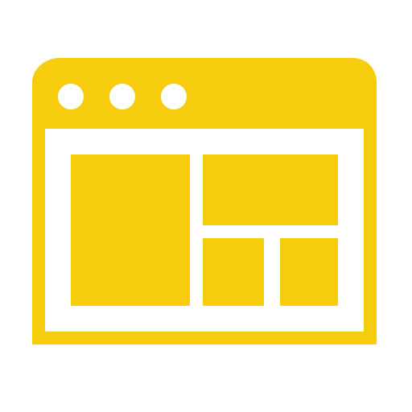

About me
I'm creative webmaster, UI/UX Designer, Mobile App developer and Instrumentation Technician from Libreville,Gabon working at Acte Academy and freelance in Web and mobile app development. I enjoy turning complex problems into simple beautiful and intuitive design
My aim is to bring solutions into the fields where i find my skills. I trained people in basic electronics, microcontrollers using Arduino, web UI/UX development, mobile app development using flutter and also graphic design
What I Do

Webmaster and UI/UX Designer
Specializing in creating user-friendly and visually appealing web interfaces, with expertise in both technical web development and creative design strategies. Focused on optimizing user experiences for functionality and aesthetics while ensuring seamless navigation and accessibility. Passionate about bridging technology with design to solve real-world challenges through innovative and practical solutions.
App Developement
Dynamic web and application developer with expertise in building and maintaining cohesive digital solutions. Skill set combines web management and app development to ensure seamless functionality and performance across web and mobile platforms. Committed to user-centric designs that enhance engagement and usability. Passionate about creating innovative and scalable digital experiences.
Computer Network Technician
Expertise in configuring, managing, and troubleshooting network systems to ensure secure and reliable connectivity for users and devices. Skilled in optimizing network performance and minimizing downtime. Committed to staying updated with emerging technologies to enhance network infrastructure. Focused on delivering efficient and scalable network solutions.

Instrumentation Technician
Foundational knowledge in installing and maintaining instrumentation systems, with a strong eagerness to apply learning for ensuring accurate measurements in industrial processes. Gained hands-on experience with basic sensors and controllers during studies, demonstrating enthusiasm for troubleshooting and improving system performance. Committed to growing skills and contributing to efficient technical operations.